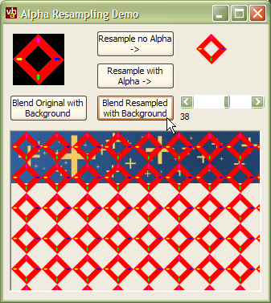
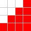
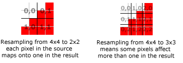

VB5 Alpha Resample Demo (57K)
VB5 Alpha Resample Demo (57K)
 VB6 Alpha Resample Demo (54K)
VB6 Alpha Resample Demo (54K)
 25 Apr 2003
25 Apr 2003
First Posted

Resampling with Alpha
Use Alpha DIBSections to provide quality anti-aliased reduced bitmaps
If you want to change the size of a bitmap, you quickly find that standard techniques such as GDI's StretchBlt aren't particularly good and the result is usually very pixelated. Resampling is a technique which smooths the contribution of each pixel whilst changing the size, and although it takes more computation it provides a vastly better output. However, if you're trying to resize a bitmap with a transparent area, resampling can cause problems too because it tends to pull the "transparent" background colours into the image. This problem can be resolved by introducing alpha into the resampling method.
The Problem With Resampling and Transparent Bitmaps
Consider the following bitmap section:
Let's say you wanted to reduce it to 1/4 of its size. If you resampled it, you would end up with a new bitmap which was a combination of red and white. For the section above, you would normally end up with a single pixel which has 10/16 contribution from red and 6/16 contribution from white, or a pink-ish shade:
This technique works well. However, one time it isn't so good is if you're trying to use the result to draw over another image. If the original image's background colour (the white area) should have been regarded as transparent, then trying to draw the resampled version doesn't work properly:

Original image drawn transparently over a background
Resampled image drawn the same way
Clearly something isn't quite right. The resampled image has captured some of the background colour from the original image, and when it is drawn over the original background it no longer resembles the original drawn transparently. In larger images, you will normally see a "halo" appear around the image unless it was resampled with the background in place.
Deal With It *
To fix this problem, you can take advantage of an alpha channel when resampling the image. Rather than just resampling the pixels, you can then start modifying the resampled result so that where it should have elements of the background colour a proportion of the background will show through.
The first step is to set the alpha of all the background pixels to 0 (transparent), and then set all of the pixels to include to alpha 255 (opaque). If you take the alpha channel into account when resampling, the result works out like this instead:
| Pixel | Alpha | Red | Green | Blue |
| 0,0 | 0 | 255 | 255 | 255 |
| 1,0 | 0 | 255 | 255 | 255 |
| 2,0 | 0 | 255 | 255 | 255 |
| 3,0 | 255 | 255 | 0 | 0 |
| 0,1 | 0 | 255 | 255 | 255 |
| 1,1 | 0 | 255 | 255 | 255 |
| 2,1 | 255 | 255 | 0 | 0 |
| 3,1 | 255 | 255 | 0 | 0 |
| 0,2 | 0 | 255 | 255 | 255 |
| 1,2 | 255 | 255 | 0 | 0 |
| 2,2 | 255 | 255 | 0 | 0 |
| 3,2 | 255 | 255 | 0 | 0 |
| 0,3 | 255 | 255 | 0 | 0 |
| 1,3 | 255 | 255 | 0 | 0 |
| 2,3 | 255 | 255 | 0 | 0 |
| 3,3 | 255 | 255 | 0 | 0 |
| Average | 96 | 255 | 96 | 96 |
If you apply the new resulting red colour with alpha, it blends with the background correctly:
Alpha resampled image rendered over background
* Deal With It is a great track from the Beastie Boys marvellous Aglio E Oglio EP. 1 min 58 of thrash which you can encode at 9.6kbps without losing any sound quality whatsoever.
Implementing The Algorithm
The simple case for implementing this algorithm occurs when the size of the resampled result is related to the size of the original by an integral divider in both directions. When that happens, each pixel in the original version only ever contributes towards one pixel in the result. As a consequence, the algorithm only ever has to visit each pixel in the source once to determine its contribution to the output. If on the other hand, the new size is a non-integral multiplier, a single pixel in the source can contribute to either 0,1,2 or 3 pixels in the destination depending on the multiplication factor.
Effect of different sizing ratios on resampling
One of the consequences of this is that for non-integral size ratios the resampling algorithm must build a temporary work area to calculate the contributions from each of the pixels. It is worth remembering this if you are using the algorithm - for example, often you can often add more transparent pixels to the source image to get an integral size. In any case, even if you prefer to use prime numbers for your image sizes you can still achieve a result and the algorithms typically both run in a sensible time.
The implementation of the simple resample algorithm for a DIB is shown below:
' Number of pixels in the result per pixel in
' the source:
scaleX = m_tBI.bmiHeader.biWidth \ cDibTo.Width
scaleY = m_tBI.bmiHeader.biHeight \ cDibTo.Height
' The number of pixels per output pixel is constant:
lTotAlpha = scaleX * scaleY
' Number of scans to step in X in the source whilst
' building the result:
xStep = (scaleX - 1) * 4
' For each group of pixels in the source horizontally:
For x = 0 To BytesPerScanLine - 4 Step 4 * scaleX
yDest = 0
' For each group of pixels in the source vertically:
For y = 0 To m_tBI.bmiHeader.biHeight - 1 Step scaleY
' Start calculating the resampled values:
lR = 0: lG = 0: lB = 0: lA = 0
lTotColour = 0
' Loop through each source pixel which contributes
' to this output pixel:
For i = 0 To xStep Step 4
For j = 0 To scaleY - 1
' Get the alpha:
lAMult = bDib(x + i + 3, y + j)
' If alpha is non-zero, add the result to the
' output:
If (lAMult > 0) Then
lB = lB + (bDib(x + i, y + j) * lAMult) \ 255
lG = lG + (bDib(x + i + 1, y + j) * lAMult) \ 255
lR = lR + (bDib(x + i + 2, y + j) * lAMult) \ 255
lTotColour = lTotColour + 1
End If
lA = lA + lAMult
Next j
Next i
' Now we can calculate the resulting pixel and
' set it:
If (lTotColour > 0) Then
bDibTo(xDest, yDest) = (lB \ lTotColour)
bDibTo(xDest + 1, yDest) = (lG \ lTotColour)
bDibTo(xDest + 2, yDest) = (lR \ lTotColour)
End If
bDibTo(xDest + 3, yDest) = (lA \ lTotAlpha)
yDest = yDest + 1
Next y
xDest = xDest + 4
Next x
Sample Code
The sample code includes implementations of both the resampling algorithms and shows how to create a simple real-time animation using a resampled bitmap.
Conclusion
If you're working with bitmaps with transparent backgrounds and want to be able to resize them in a visually pleasing way, you should take advantage of the alpha channel. This article provides some code with good performance to allow you to do this easily.